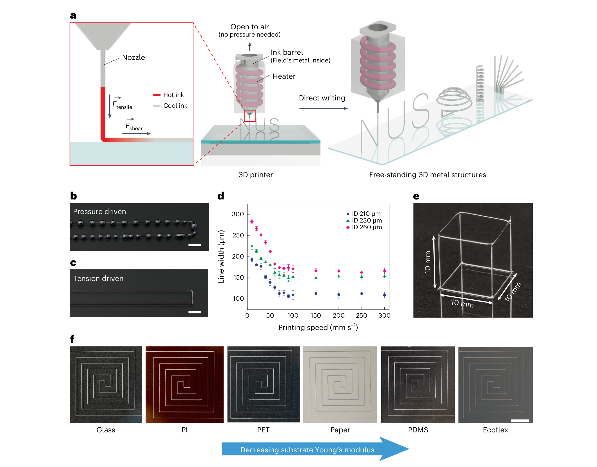
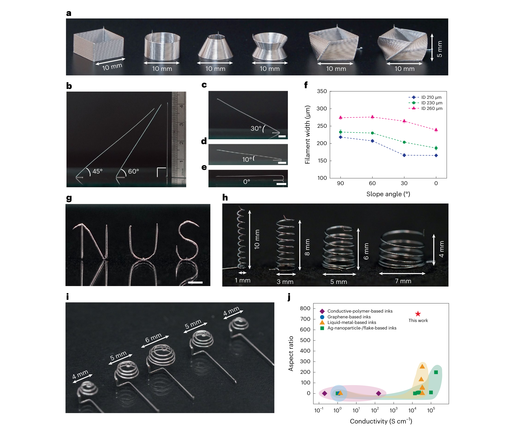
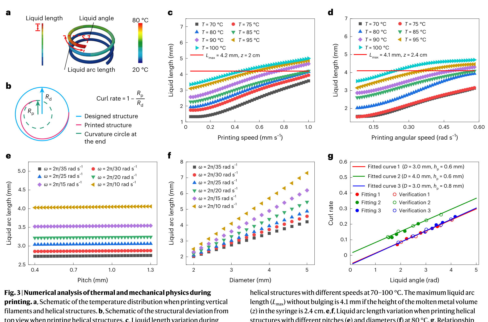
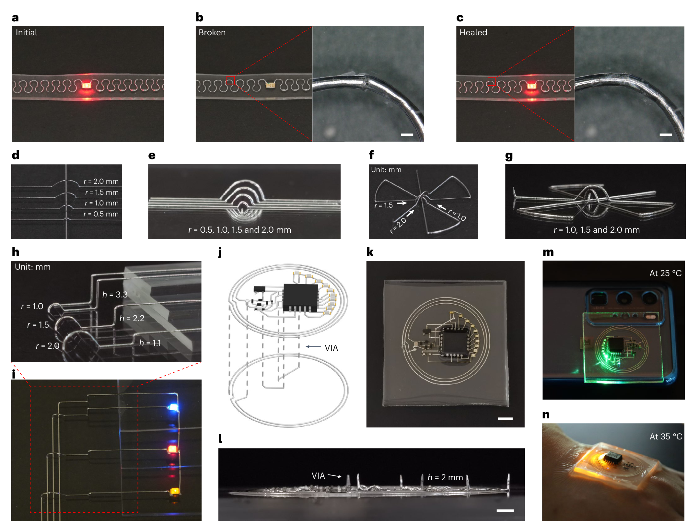
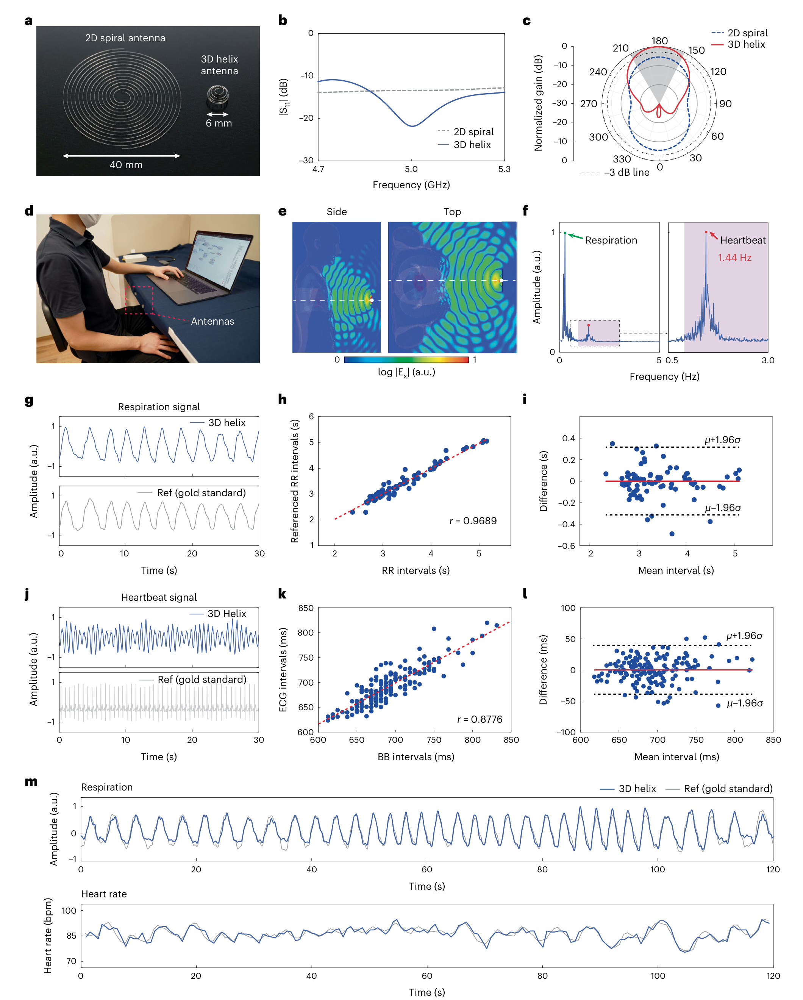
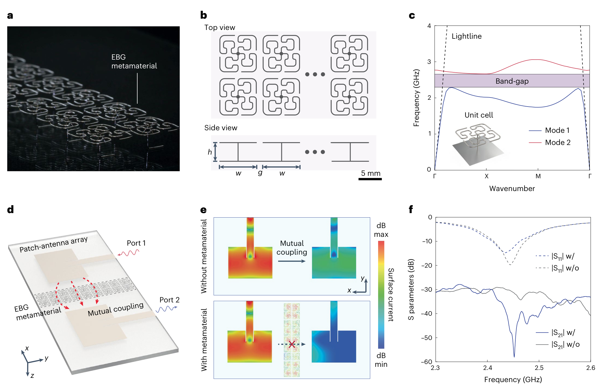

FIG. 1
机制起点：外压会珠化，拉力反而能保持连续金属线
第一图把工艺的反直觉之处钉死：低黏度液态金属并不缺流动性，缺的是不破坏氧化皮的驱动力。去掉外压后，液桥牵引负责供料，薄氧化皮负责暂时守住形状。

作者没有继续给低黏度金属加压，而是反过来利用喷嘴与已打印固体前缘之间的液桥拉力：平面路径靠剪切牵引，离面路径靠张力牵引；Field’s metal 离开热喷嘴后快速凝固，表面氧化皮在无外压时抑制珠化。真正的贡献是把流动、氧化与凝固配成一个可编程工艺窗口，从而直接写出悬空线、螺旋、跨线桥和电磁结构。
证据边界：图片截自用户提供的正式论文 PDF，仅发布用于研究解读的完整图体，不分发原始 PDF。论文正文完整，但部分力学推导、黏度阈值和扩展实验位于未随本地文件提供的 Supplementary Information；相应机制细节只能按正文与主图核验。
传统 direct ink writing（直接墨水书写，DIW）依赖外压挤出：对黏稠浆料有效，却会把低黏度 Field’s metal 的薄氧化皮顶破，使金属在高表面张力下缩成一串珠子。本文去掉外部压力源，让移动喷嘴从液桥中连续拉出金属，再用室温快速凝固托住后续结构。它把约 100–300 μm 的线宽、最高 2 × 104 S cm−1 的金属电导率与最高 750:1 的细丝长径比放到同一个无需牺牲支撑材料的工艺里。
第一图把工艺的反直觉之处钉死：低黏度液态金属并不缺流动性，缺的是不破坏氧化皮的驱动力。去掉外压后，液桥牵引负责供料，薄氧化皮负责暂时守住形状。

第二图是论文最重要的“能力边界图”。它不只展示漂亮样品，而是证明喷嘴可沿 90° 到 0° 路径拉出自支撑细丝，并把电导率与长径比放到既有 DIW 材料的坐标系中比较。

第三图把经验打印参数翻译成热—力边界：自由空间散热比贴着金属台面慢，速度或温度提高都会延长仍高于 62 °C 的液态区；液柱给氧化壳施加的环向应力一旦超过屈服限，细丝就失稳。

第四图从材料特性转向电路制造。低熔点让断线能热熔接，悬空弧桥解决同层交叉，竖直 VIA 连接多层；随后作者把预先嵌入的 IC、二极管、电容与打印线圈组合成 NFC 供电温度指示器。

第五图不是为了证明生命体征算法有多先进，而是证明打印自由度能改变天线体积与辐射方向。6 mm 半球螺旋相较 40 mm 平面螺旋形成更强定向波束，再用多普勒相位读出胸腹微动。

最后一图把打印几何用到电磁带隙（electromagnetic bandgap, EBG）材料。周期金属单元在目标频段禁止某些表面模传播，插入两贴片天线之间后降低 S21，说明复杂三维导体可直接成为射频功能材料。

复现优先级：若只用一周验证论文，先复现 Fig. 1b/c 与 Fig. 3c。用 210 μm 喷嘴、80 °C Field’s metal，在相同路径下比较外压与无外压的珠化；再把离面速度从 0.2 扫到 1.2 mm s−1，同步记录细丝直径、液态段长度与鼓包概率。若无外压不能显著降低珠化，或鼓包概率与液态长度/速度没有预期转折，论文的核心输运机制就受到直接挑战。
← 返回论文细读书架